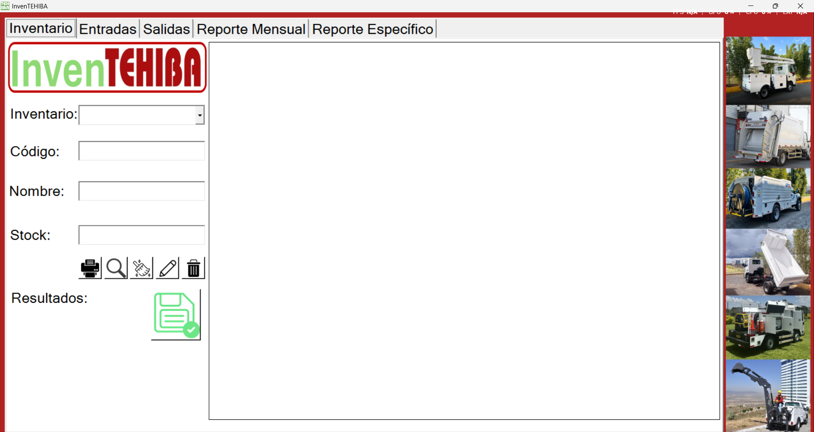
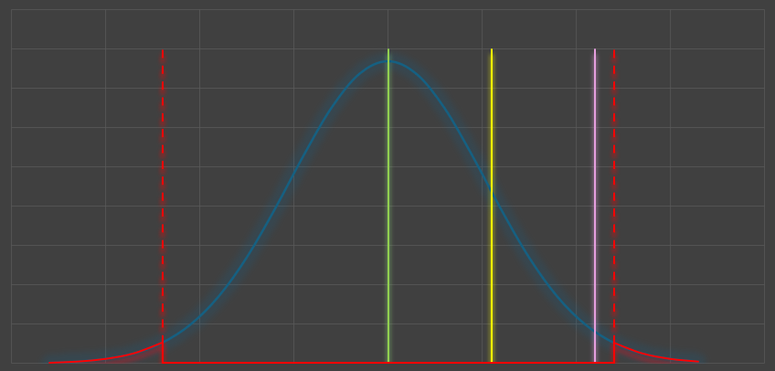

Mis Proyectos Profesionales

Sistema de Inventario
Aplicación de escritorio para el control de inventario, entradas, salidas y reportes PDF. Incluye login y permisos.
Ver en GitHub

Control de Calidad en Excel
Macros para analizar medidas de piezas, validar tolerancias y generar estadísticas como CPK, CP y gráficas tipo campana. Ideal para el área de calidad.
Ver en GitHub
Calendario de Producción
Herramienta tipo diagrama de Gantt para organizar órdenes de producción en múltiples áreas con días hábiles y macros que automatizan las fechas.
Ver en GitHub